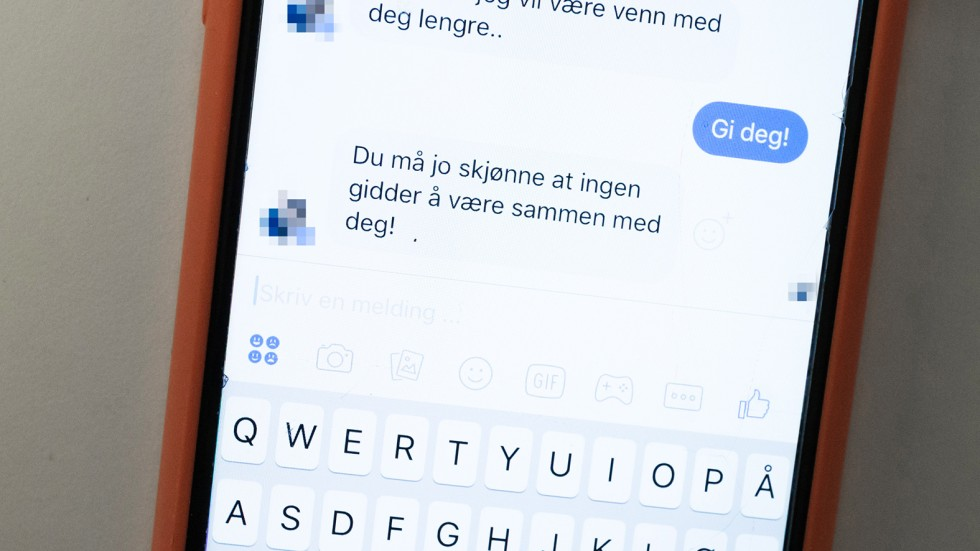

Konsekvensar og måtar

Vi skil mellom vertikale og horisontale sosiale system, for å kunne forstå korleis sosiale medium påverkar oss. Vi er fysisk større eller i mindre gruppar i det vertikale sosiale systemet. Som for eksempel med familie, fotballag eller ein vennegjeng. Det horisontale sosiale systemet er for eksempel sosiale medium og online spel. På sosiale medium bruker folk flest facebook, snapchat, instagram, twitter, youtube o.s.v. På ei meir effektiv måte kan vi bruke dei ulike sosiale mediuma. Men av og til kan sosiale medium også være farleg. Ein skal ha respekt på nett. |